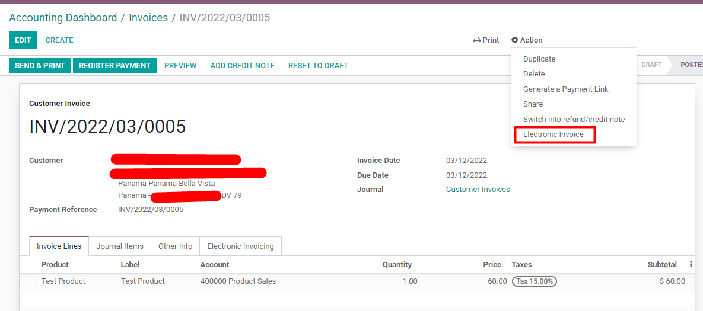
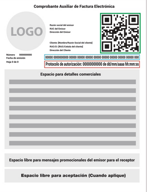

Factura Electrónica de Panamá
Conecte Odoo con PAC autorizado
Beneficios
Realice el proceso de facturación sin salir de Odoo.

Envíe desde Odoo a sus clientes el CAFE (Comprobante Auxiliar de la Factura Electrónica)

Proveedores de Autorización Calificada (PAC) soportados:
-
HKA
-
WEBPOS
-
EBIPAC
La conexión se realiza a través del portal de Apcon Consulting. Pueden contactar a través del teléfono +507 398 0498 o por correo electrónico a info@apconConsulting.com.
Este precio no incluye: la cuenta de EDocs pago único de 550 USD ni la renovación anual de 160 USD. Asimismo hay que adquirir planes de timbrado.
Panama e-invoice
Connect Odoo with authorized PAC
Advantages
Make the whole Panamanian electronic invoice directly in Odoo.
Send from Odoo directly the official signed invoice -CAFE (Comprobante Auxiliar de la Factura Electrónica)
Supported signing providers - Proveedores de Autorización Calificada (PAC):
-
HKA
-
WEBPOS
-
EBIPAC
Connection with providers is performed via Apcon Consulting +507 398 0498 info@apconConsulting.com.
Odoo app doesn't include EDocs account 550 US$ one time payment - 160 US$ yearly renewal.
Signing plans have to be acquired separately.